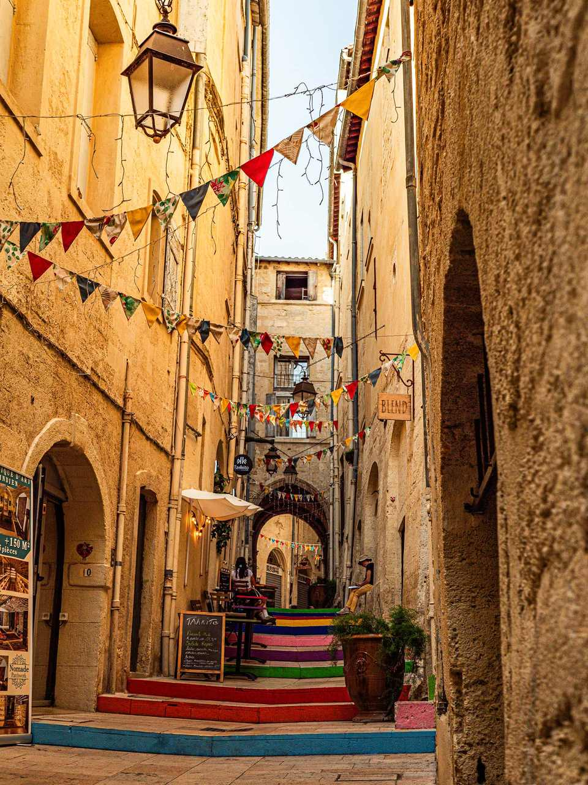
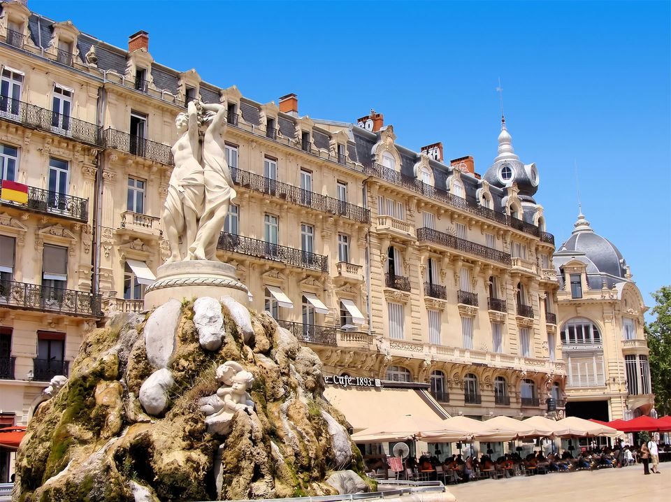
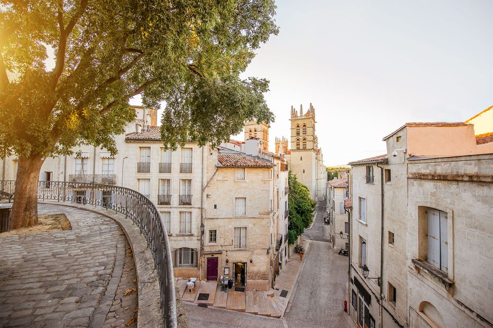
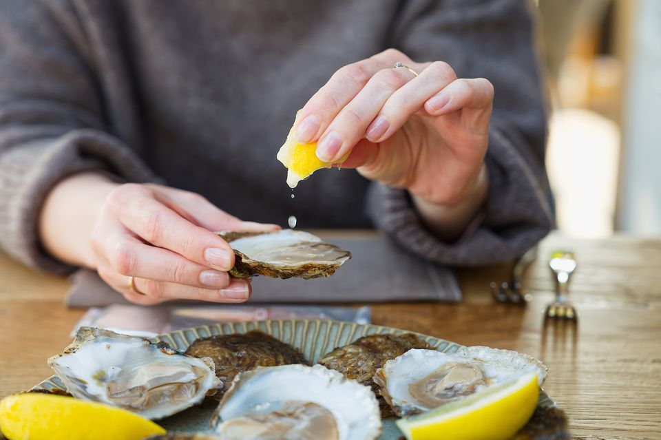
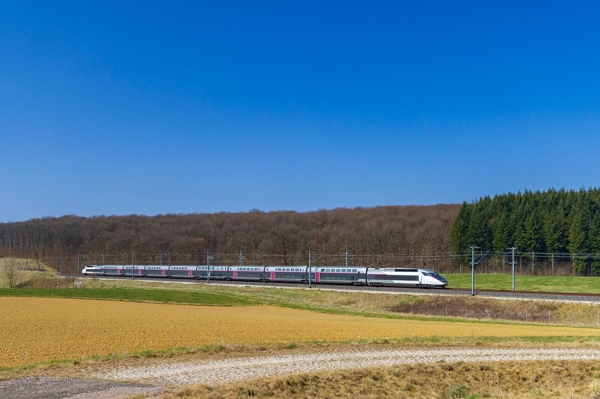

Not Paris. Not Marseille. Montpellier. It’s the South of France city most visitors haven’t found yet, and it’s under 3½ hours from Paris by direct train. Tell us when you’d like to visit for your chance to win one of 120 rail vouchers worth €50 toward your trip.
No purchase necessary. Ends January 31, 2027. One entry per person. Official rules apply.

Montpellier is one of the South of France’s best-kept secrets. It has everything you’d hope for, from Mediterranean sunshine and medieval streets to great food and wine, minus the Riviera crowds. Step off the train at Saint-Roch and you’re right in the heart of it.

Montpellier is one of the sunniest cities in France, so an afternoon at a sidewalk café is never far away, whatever the season.

From the medieval lanes of the Écusson to Saint-Pierre Cathedral and the 18th-century Promenade du Peyrou, centuries of history sit within a short walk of each other.

Taste fresh oysters from the nearby Thau lagoon and Languedoc wines at Les Halles Castellane, or hop on a train to the seaside town of Sète, just 20 minutes away.
A simple plan for your first visit. Everything on days one and two is walkable from the station.
Day 1
Start with coffee in Place de la Comédie, then spend the afternoon at the Fabre Museum, one of France’s great art museums. Finish the day with dinner in the old town.
Day 2
Wander the lanes of the Écusson, then head up to the Promenade du Peyrou for views over the city and the Saint-Clément aqueduct. In the afternoon, stroll through Antigone, Ricardo Bofill’s neoclassical-style district, or catch an exhibition at MO.CO.
Day 3
Hop on the train to Sète for its canals, fishing port and a long seafood lunch by the Mediterranean, or visit the Roman arena in Nîmes. You’ll be back in Montpellier in time for a glass of Languedoc wine.
Short on time? Days one and two make a perfect stop between Paris and Barcelona.
Montpellier sits in the heart of the Languedoc, one of France’s largest wine regions, with the Mediterranean on its doorstep. Eating well here is easy, whether you’re grazing at the market or settling in for a long lunch.
The city’s historic covered market in the old town. Come for cheese, charcuterie and fresh produce, and stay for a glass of wine at the counter.
Oysters and mussels from the Thau lagoon, near Sète, are a local favorite. Look out for them on market stalls and restaurant menus across the city.
Try reds and whites from the vineyards around the city, including Pic Saint-Loup, just to the north. Many bars and restaurants pour local wines by the glass.
You won’t need a car. Most of what you’ll want to see is a short walk from the station, and the tram covers the rest.
The center is compact and mostly pedestrian-only. From Saint-Roch station, Place de la Comédie, the Écusson and Antigone are all just minutes away.
Montpellier’s tram network links the center with the rest of the city, with a stop right outside Saint-Roch station. Buy tickets from the machines at each stop.
Some high-speed trains stop at Montpellier Sud de France, on the edge of the city. Just hop on tram line 1 and you’ll be in the center in about 20 minutes.
Montpellier makes a great base for exploring the South of France, including places many visitors to France never reach. Leave after breakfast and be back in time for dinner.
About 20 minutes
Canals, a working fishing port and tielle, the town’s spicy octopus pie.
About 30 minutes
A remarkably well-preserved Roman arena and the Maison Carrée temple.
About 1 hour
Roman monuments and the streets and cafés Van Gogh painted.
About 1 hour
The Palais des Papes and the famous half-bridge over the Rhône.
Under 2 hours
A fairytale walled city, one of the most complete medieval fortresses in Europe.
Flying into Paris? Montpellier sits on France’s high-speed network, with direct trains from the city and the airport, plus Barcelona, Lyon and Marseille.

High-speed trains in France require a seat reservation, and it’s included when you book a standard ticket with Rail Europe.
Enter by January 31, 2027 for your chance to win one of 120 rail vouchers worth €50, then start planning your trip.
In partnership with